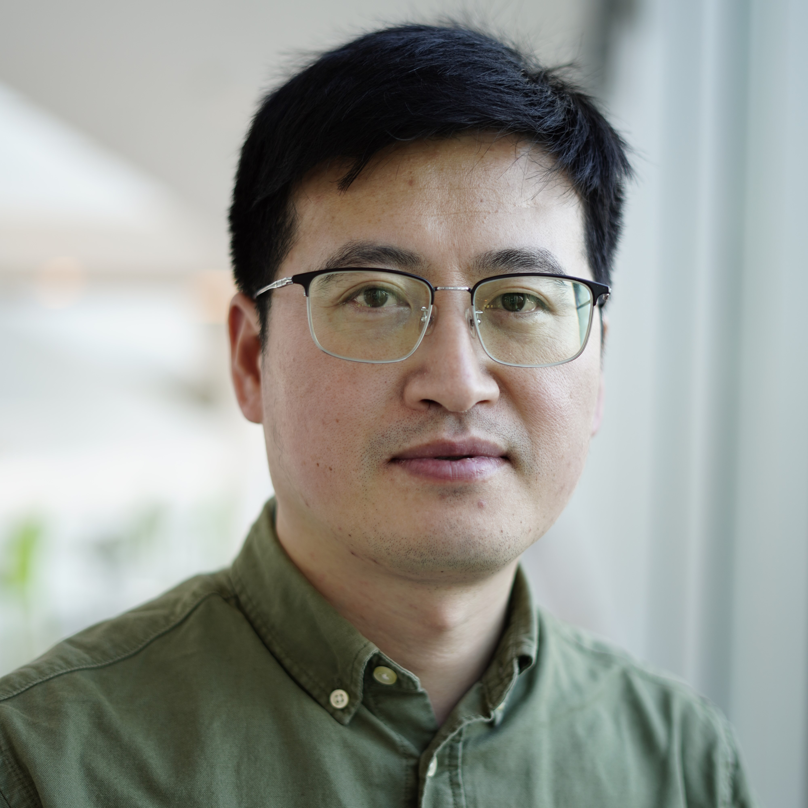
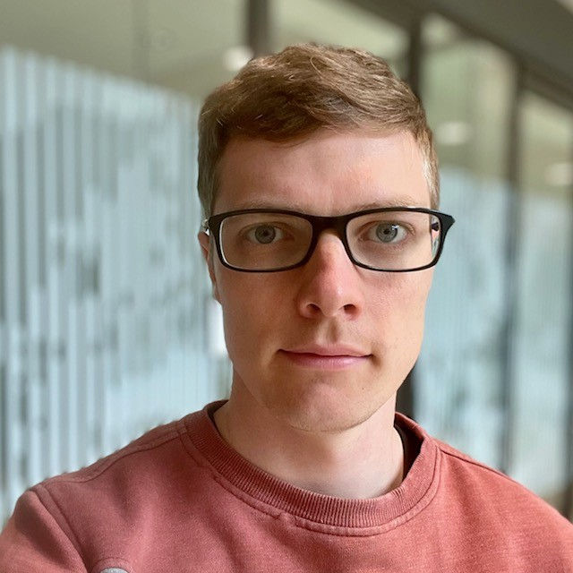
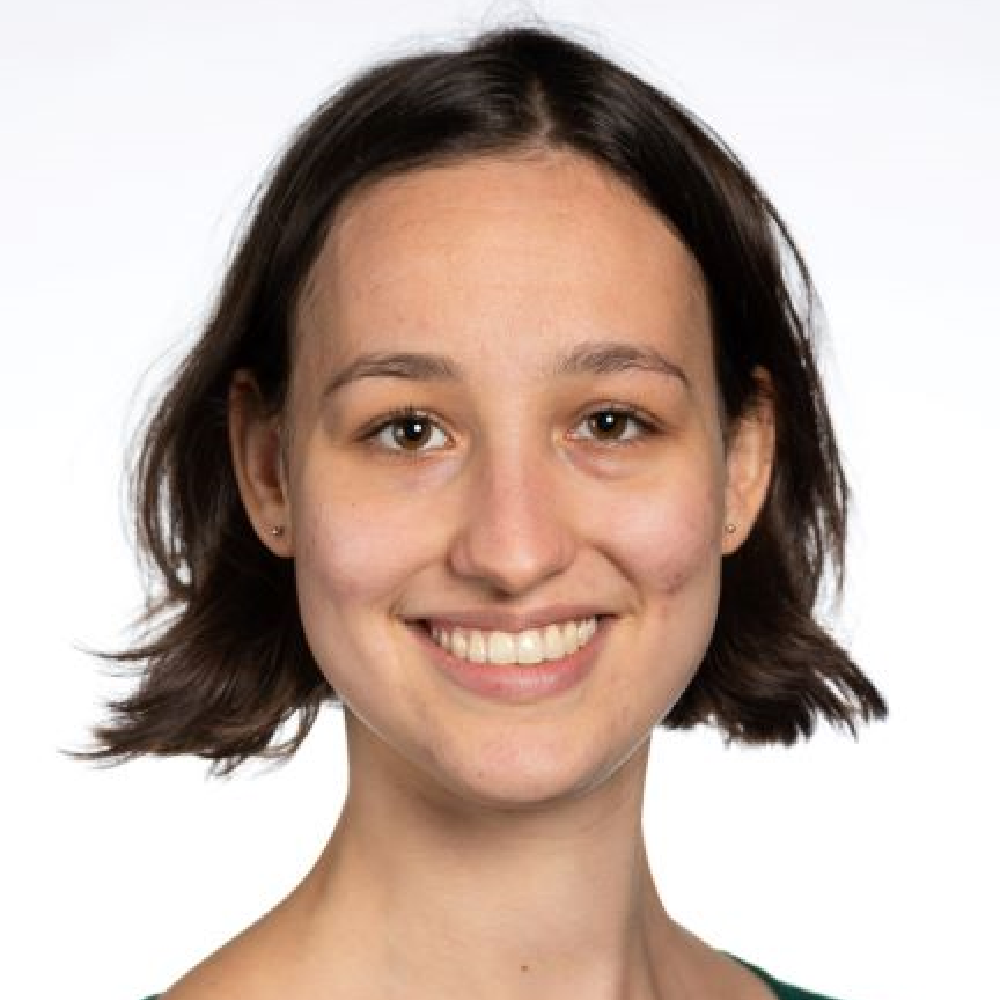
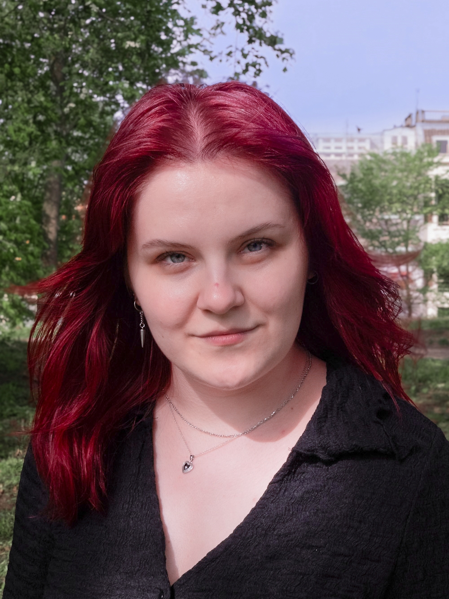
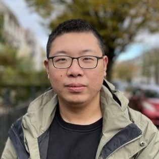
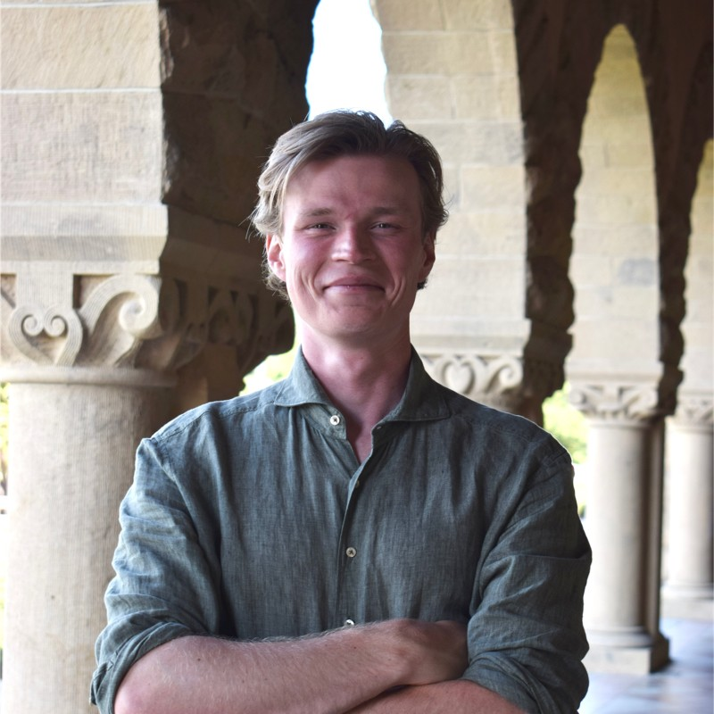
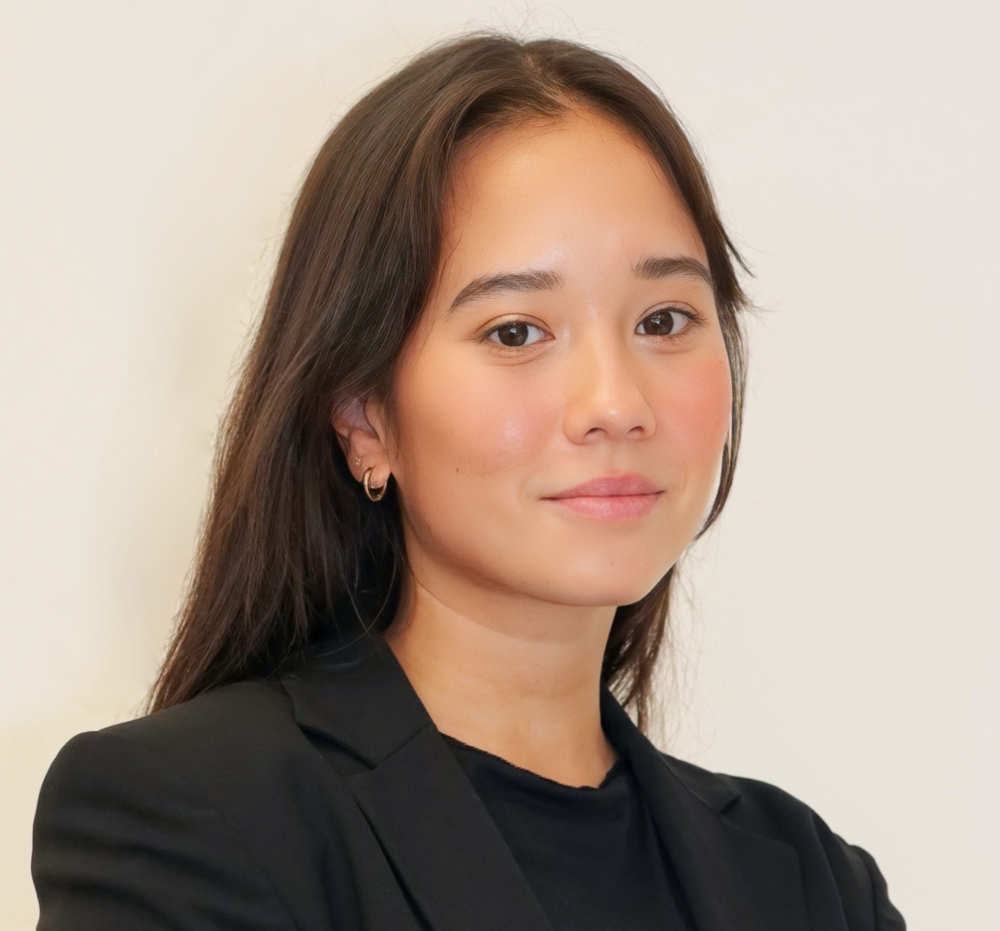

Principal Investigators

Prof. dr. Micha Drukker
Micha Drukker earned his PhD at the Hebrew University before becoming a postdoctoral scholar at Stanford University Medical School in the lab of Irving Weissman.
He became and received tenure as a group leader and head of the induced pluripotent stem (iPS) cell core facility at the Helmholtz Center in Munich in 2012 and 2018.
Micha became a full professor at 2020 in Leiden University within the Leiden Academic Center for Drug Research (LACDR).


Asst. prof. dr. Christian Schröter
Christian Schröter has joined the project team in summer 2024 as an Assistant Professor in the Drukker group.
He obtained his PhD from the Max Planck Institute of Molecular Cell Biology and Genetics in Dresden, conducted postdoctoral work at the Department of Genetics at the University of Cambridge, UK, and led an independent research group at the Max Planck Institute of Molecular Physiology in Dortmund from 2016 till 2024.
He has a keen interest in understanding how the species-specific genetic make-up of a cell determines its dynamic behavior during develoment and ageing. From his previous work, Schröter brings expertise in live-cell imaging, molecular genetics, and single-cell transcriptomics.
Postdocs

Dr. Jingchao Wu
Jingchao Wu is a postdoc in Drukker lab since January 2024. He works on differentiating induced pluripotent stem (iPS) cells into multiple tissue-specific cell types.

Dr. Max Fernkorn
Max Fernkorn has joined the team as a Postdoc in august 2024. He received his doctoral degree in the lab of Christian Schröter at the Max Planck Institute of Molecular Physiology in 2024.
PhD Candidates

Benjamin Tak
Benjamin Tak is a PhD candidate with a background in neuroscience. In the Drukker lab he works on developing in vitro models of the developing spinal cord, derived from neuromesodermal progenitors.
Additionally, he works as autopsy coordinator and assistant at the Netherlands Brain Bank (NBB).

Ruben de Vries

Yuting Wang

Eliane Züger

Rafaella Buzatu
Rafaella began her PhD in 2023, focusing on the development of a bioinformatics pipeline for the tumorigenicity assessment of advanced therapy medicinal products (ATMPs). She has a strong interest in artificial intelligence, particularly in applying language models to address complex biological questions. In addition to her research, she contributes as a non-clinical assessor at the CBG-MEB.

Joey Zuijdervelt

Yubin Guo

Ferdinand Teichert M.D.
Technicians

Andreea Iosif
Andreea has been part of the team since 2023 and makes sure both the lab and the team members are doing well.
From helping with experiments, to managing the lab and supervising students, she enjoys trying to help wherever possible.
If you ever need a kind word or a snack to get you through the day, her office is always open.
Daan Vlemmings
Daan is an Ir. with training in regenerative medicine engineering and technology, and a history in tissue- and organ culture.

Cecile Herbermann
Cecile joined the group as a bioinformatician in January 2025. She works on the Painless project, analyzing (single-cell) RNA-sequencing data to uncover molecular mechanisms underlying chronic pain.
Her broader interests include applying large language models pre-trained on human embryonic data to interpret experimentally differentiated iPSCs — including inferring cell types and exploring developmental trajectories.

Nina Schulten
Nina started as a research technician in the lab in March 2025.
She has a background in molecular genetics and synthetic biology and is currently involved in the painless project, which aims to identify drug targets for chronic pain in dorsal root ganglia.
She is responsible for the experimental aspects of the project, including work with in vivo models and iPSC-based systems.
Former Group Members

Dr. Ksenia Arkhipova
Postdoc

Dr. Alexandra de la Porte
Postdoc
Martine Bierbooms
Technician